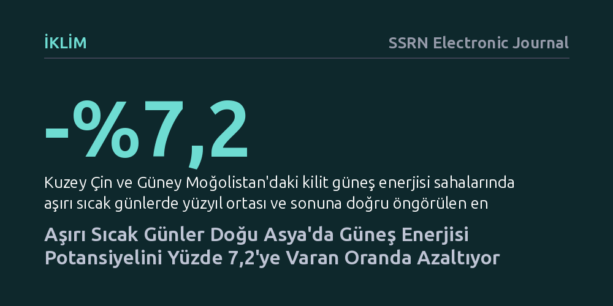

IKLIM · SSRN Electronic Journal · 2026-09-08
Araştırmacılar, iklim değişikliğiyle artan aşırı sıcak günlerin Doğu Asya'daki güneş enerjisi potansiyeline etkisini farklı emisyon senaryolarıyla modelledi. Gelecekte aşırı sıcak günlerde bölge genelinde güneş potansiyelinin düşeceği, bu kaybın yüzyıl sonuna doğru özellikle yüksek emisyonda yüzde 7,2'ye ulaşabileceği belirlendi.
Güneş enerjisine en çok ihtiyaç duyulan ve havanın en güneşli olduğu kavurucu günlerde, panellerin aşırı ısınma nedeniyle verim kaybederek beklenenin aksine daha az elektrik üreteceğini gösteriyor.

Fosil yakıtların terk edilmesi ve karbon salımlarının azaltılması hedefinde güneş enerjisi tüm dünyada en hızlı yaygınlaşan temiz enerji kaynağı durumunda. Genel kanı, havanın en açık ve güneşin en parlak olduğu sıcak yaz günlerinin güneş santralleri için en yüksek elektrik üretim zamanı olduğu yönündedir. Ancak pratikte güneş panellerinin verimliliği ortam sıcaklığıyla yakından ilişkilidir; paneller aşırı ısındığında yarı iletken hücrelerdeki elektriksel direnç artar ve üretilen elektrik miktarı belirgin biçimde düşmeye başlar.
Küresel ısınma hız kazandıkça, aşırı yüksek sıcaklıkların hem görülme sıklığı hem de şiddeti artıyor. Dünyanın en büyük sera gazı salıcılarından olan ve iklim krizine karşı hassas bir konumda bulunan Doğu Asya'da bu durum kritik bir çelişki doğuruyor. Çünkü bölgede güneş enerjisi potansiyelinin en yüksek olduğu günler, aynı zamanda aşırı sıcak hava dalgalarının yaşandığı günlerle büyük oranda örtüşüyor.
Bu tablo şu can alıcı soruyu gündeme getiriyor: Gelecekte iklim değişikliğiyle daha da yoğunlaşacak kavurucu sıcaklar, temiz enerjiye geçişin belkemiği olan güneş enerjisi potansiyelimizi nasıl etkileyecek? Güneşten en çok elektrik beklediğimiz günlerde yaşanacak verim kayıpları, yenilenebilir enerjiye dayalı bir geleceği tehlikeye atabilir mi?
Araştırmacılar, bu sorunun yanıtını aramak için Doğu Asya genelinde 21. yüzyılın ortasını ve sonunu kapsayan kapsamlı iklim simülasyonları gerçekleştirdi. Çalışmada, sera gazı salımlarının sınırlandırıldığı düşük karbon emisyonlu bir gelecek ile fosil yakıt tüketiminin hız kesmeden sürdüğü yüksek karbon emisyonlu senaryolar karşılaştırmalı olarak ele alındı.
Modelleme sürecinde araştırmacılar, bölgenin fotovoltaik güç potansiyelini (PVpot) hesaplamak için yüzeye yakın hava sıcaklığı, güneş ışınımı miktarı ve diğer atmosferik göstergeleri bir araya getirdi. Çalışmanın en ayırt edici tarafı, yalnızca yaz aylarının genel ortalamalarına odaklanmak yerine, sıcaklık uç değerlerinin yaşandığı 'aşırı sıcak günleri' bağımsız olarak ayırıp derinlemesine incelemesi oldu.
Bu simülasyon yöntemi, iklim değişkenlerinin paneller üzerindeki etkisini tek tek ayrıştırarak, gelecekteki aşırı sıcak dalgalarında elektrik üretiminde tam olarak ne kadarlık bir kayıp yaşanacağını ve bu kaybın asıl sorumlusunun hangi etken olduğunu sayısal olarak ortaya koymayı mümkün kıldı.
Elde edilen simülasyon sonuçları, Doğu Asya genelinde aşırı sıcak günlerdeki güneş enerjisi potansiyelinin istisnasız tüm senaryolarda ve gelecekteki tüm dönemlerde düşeceğini gösterdi. Normal yaz ortalamalarında bazı alt bölgelerde potansiyel artarken bazılarında azalırken, aşırı sıcak günlerde tüm bölgede kayıplar istikrarlı biçimde düşüş yönünde gerçekleşti. Bu durum, aşırı sıcakların güneş enerjisi potansiyelindeki gerilemeyi daha da şiddetlendirdiğini kanıtlıyor.
Çalışmaya göre, güneş enerjisi potansiyelindeki düşüş yüzyılın sonuna doğru çok daha belirginleşiyor ve yüksek karbon emisyonu senaryosu altında kayıp daha da büyüyor. Özellikle Kuzey Çin ve Güney Moğolistan gibi yüksek güneşlenme süreleriyle güneş santrali kurulumunun en verimli olduğu odak alanlarda (hotspot), aşırı sıcak günlerdeki elektrik potansiyeli kaybının yüzde -7,2 seviyesine kadar ulaşacağı öngörülüyor.
Araştırmacılar, incelenen iklim değişkenleri arasında potansiyel düşüşünün bir numaralı sorumlusu olarak 'yüzeye yakın hava sıcaklığını' tespit etti. Aşırı sıcak koşullarda ortam sıcaklığının paneller üzerindeki olumsuz etkisi zamanla daha da baskın hale gelmekte ve yüksek emisyon senaryosunda güneş potansiyelindeki düşüşü daha da hızlandırmaktadır.
Bu bulgular, geleceğin temiz enerji altyapısını planlayan karar vericiler ve mühendisler için kritik bir uyarı taşıyor. Aşırı sıcak hava dalgalarının yaşandığı günlerde, binalarda ve sanayide soğutma ve klima ihtiyacı tavan yaparak elektrik şebekelerini en uç kapasitelerine zorluyor. Tam da bu kritik anlarda güneş santrallerinin ısınma nedeniyle beklenenden daha az elektrik üretecek olması, şebeke dengesini ve enerji arz güvenliğini ciddi şekilde tehdit edebilir.
Gelecekte güneş enerjisi santralleri tasarlanırken yalnızca bölgenin ne kadar güneş aldığına bakmak yeterli olmayacak; aşırı sıcaklıkların paneller üzerindeki verim kırıcı etkisi de hesaba katılmak zorunda kalacak. Bu durum, yüksek sıcaklıklarda performansını koruyabilen yeni nesil panel malzemelerinin geliştirilmesini, aktif soğutma teknolojilerini ve aşırı sıcak günlerdeki açığı kapatacak enerji depolama yatırımlarını zorunlu kılıyor.
Son olarak çalışma, iklim krizini yavaşlatmanın ve karbon emisyonlarını derhal düşürmenin yalnızca gezegenin sıcaklığını korumakla kalmayıp, aynı zamanda temiz enerji altyapımızın verimli ve sürdürülebilir biçimde çalışabilmesi için de vazgeçilmez olduğunu bir kez daha ortaya koyuyor.